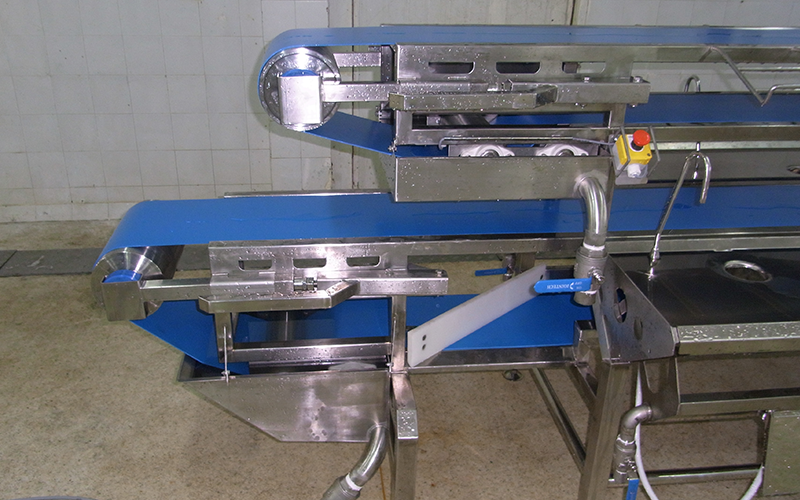

1. Food Conveyor System
Food Conveyor System – สายพานลำเลียงสองชั้น
ระบบสายพาน PU สีฟ้าสองชั้นซ้อนกัน โครงสแตนเลสทั้งชุด มีถาดรองน้ำ ท่อน้ำ และปุ่มหยุดฉุกเฉิน (E-Stop) เหมาะกับไลน์ตัดแต่งและล้างวัตถุดิบอาหาร
ข้อความบนเว็บ: “Food Conveyor System – ระบบลำเลียงงาน Food”
หน้าสินค้าต้นทาง ↗